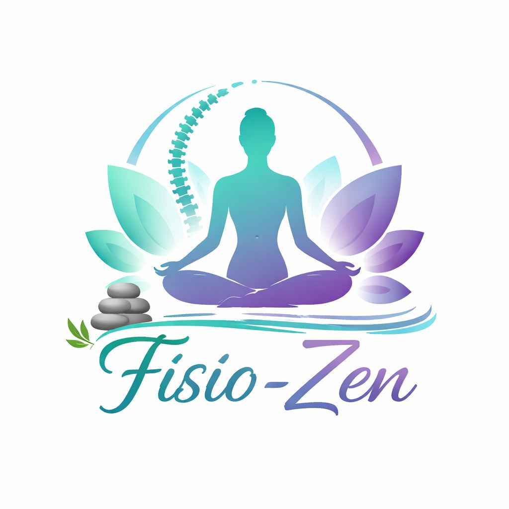

Realizamos tratamientos totalmente personalizados para aliviar el dolor, mejorar tu movilidad y volver a la vida activa.
Podemos atender desde lesiones deportivas hasta tratamientos rehabilitantes
Cada plan de tratamiento se diseña individualmente para maximizar tu recuperacion de forma segura y eficaz.
Tratamientos de dolores musuclares articulares y oseos.
recuperacion de lesiones deportivas como esguinces, roturas etc.
Uso del calor superficial para aliviar espamos o dolor.
Uso del frio superficial para aliviar espamos o dolor.
Primera consulta sin costo. Cuentanos tu situacion y nuestro equipo diseñara un plan adecuado a tus necesidades.